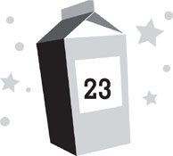

Lunar day 218
Well after bedtime
“Hello, Dashiell,” Zan said.
I pried my eyes open to find her peering into my sleep pod. Or at least, projecting the image of herself doing that into my brain.
I checked my watch. It was midnight. But even though Zan was waking me from much-needed sleep, I found myself happy to see her. “Hi,” I replied, reminding myself to keep the conversation in my head. My family was asleep in their pods around me.
My watch also indicated I’d received a great number of text messages since I’d last checked it. Most of them were from Riley, wanting to know what I’d thought of the Sjobergs’ video. With all the excitement, I’d forgotten to text her that I’d seen it.
“I’m sorry to disturb you like this,” Zan said.
“It’s all right.” Although I could have remained in my pod, talking to Zan in my head, it seemed weird to have a conversation that way. So I kicked my covers aside and slipped out into the room.
“It’s not all right,” Zan countered. “You had an extremely stressful day—partly due to my behavior.”
I gave her a confused look. “You didn’t stress me out. If anything, you helped. You let me know Nina was still alive—and then you saved me from Patton. In fact, you scared him so badly, I don’t think he’s going to be bullying anyone anymore.”
“I’m glad I could be of help. But as you pointed out, my behavior has also been frustrating. There are some things I’ve kept secret that have been bothering you.”
I paused in the middle of pulling on a T-shirt. “Well, yes . . .”
“I’d like to tell you the truth.”
“Right now?”
“Yes.”
I glanced around the residence. My family was sound asleep, but I still didn’t feel like having such an important conversation in the room with them. If I got excited and started talking out loud again, they’d wake up and think I was losing my mind. I’d already dodged a bullet with Violet once that day. “Can we go somewhere else to talk? Somewhere private?”
“Sure. As long as it isn’t the bathrooms.”
“I was thinking of the medical bay. No one’s in there right now.”
“Fine.”
I headed for the door, taking care not to wake my family. My parents, who’d had an extremely long day themselves, were out cold. Violet was shifting around in the midst of what seemed to be a very vivid dream. “Wow,” she murmured in her sleep. “That’s a big penguin!”
I opened the door and peeked into the hall. No one was about. Zan and I slipped out onto the catwalk, passing Nina’s room on the way to the stairs.
Despite the late hour, not everyone was sleeping. In the stillness of the base, I could hear a few voices coming through the doors of the residences.
Kira and her father were the easiest to hear. They were both laughing a lot. It sounded like they were playing a game, and Kira was creaming her father, but he was taking it in stride. I wondered if they did this often at night, if this was when he engaged with her, rather than during the day, when there were too many other things to distract him.
Nina was also awake. It sounded as though she was filing a report with NASA. “I believe, as the MBC of Moon Base Alpha, it is my duty to be completely open about the events of lunar day 217 and my role in them . . . ,” she said flatly, sounding as robotic as usual.
Voices also came from the residence of Dr. Goldstein and Dr. Iwanyi. They were having a hushed but intense discussion, trying not to wake Kamoze.
“There’s no point in turning yourself in,” Dr. Iwanyi was saying. “Ultimately, no one got hurt. Nothing that happened was really your fault.”
“I still did something wrong,” Dr. Goldstein was saying. “At the very least, I led Nina to believe I could help her with her mother, and that’s not going to happen.”
“Well, maybe there’s a way we can fix that,” Dr. Iwanyi said. “We have plenty of connections in the medical community back on earth. I’m sure something can be done. . . .”
Roddy was up too. He was in the rec room with his hologoggles on. It appeared he’d reached the finale of Romeo and Juliet; he was now kissing the virtual heroine again. Evidently, the game ended much more happily than the actual play. “Oh, Juliet,” Roddy sighed to the invisible girl. “I think I love you.”
“What’s going on there?” Zan asked me.
“You don’t want to know,” I told her.
We reached the medical bay, went inside, and locked the door. Then we found two InflatiCubes and sat across from each other.
“You have been asking why it is so important that I talk to you,” Zan said. “Wondering if mankind is in trouble. I told you it wasn’t . . . but that was not completely honest of me.”
My skin suddenly felt cold, as though I’d stepped outside the moon base entirely. “So . . . humans are in danger?”
“In a sense.”
“From what?”
“Yourselves. Surely you are aware that nature is a delicate balance on every planet, and yours is in trouble.”
“Yes,” I said. This wasn’t a secret. The news from earth was always filled with stories of mass extinctions, choking clouds of pollution, islands and coastal cities inundated by floodwaters from rising seas, and other such environmental disasters.
“Humanity is running out of time to confront these problems,” Zan said. “Faster than you realize. Earlier today, you asked me if there was an asteroid heading toward earth. Well, there is, in a sense. Humanity is the asteroid. You’re doing as much damage to earth as an asteroid would. The only difference is, an asteroid would destroy life on your planet immediately, while humanity is going to take a few centuries.”
I realized I was gripping the examining table tightly. Apparently, I’d needed to steady myself after hearing Zan’s news. “How much time do we have?”
“I can’t predict the future. After all, the course you are on is not necessarily guaranteed.”
I looked at Zan, intrigued. “You mean, humanity could still survive?”
“That’s correct.”
I began to understand what Zan was getting at. “Because of you?”
“Perhaps.” Zan fixed her gaze on me, staring at me so intently that I could feel her inside my head. “Yours would not be the first species to encounter problems like this. They are, in a sense, a sort of growing pain. There are ways to harness the power of the universe that you have not discovered yet, ones that could solve many of the problems you have created for yourselves.”
“Really?” I exclaimed. “So can you tell us what to do?”
Zan didn’t answer right away, which was an answer in itself.
“You’re not going to give us this information, are you?” I asked.
“That is still being decided.”
“Why? Is it some sort of galactic test? Like, if we can’t figure it out for ourselves, we don’t deserve to survive?”
Zan laughed. “No, it’s nothing like that. This information has been passed from many species to others. In fact, that is how my own species received it. It was a gift.”
“So why won’t you give it to us?”
“Because we’re not sure you can be trusted with it. Humanity has some unusual characteristics that greatly concern us. In particular, your way of taking new technology and trying to destroy each other with it.”
“Oh,” I said sadly.
“When mankind invented steel, practically the first thing you did was make swords from it,” Zan explained. “Within only a few years of inventing airplanes, you were using them to drop bombs on each other. And when you finally figured out how to split the atom, which could have done so much good, you immediately used it to build bombs, wiping out millions of people—and ultimately threatening the lives of every being on your planet.”
I nodded, feeling ashamed on behalf of humanity. “But if we’re going to die anyhow, why not take a chance on us? Maybe we won’t make weapons with this new technology.”
“But you might. And the problem is that such weapons wouldn’t only be dangerous to you. They’d also be dangerous to civilizations on other planets. Once you start dealing with the sort of power we’re talking about, it can have effects far beyond your own tiny world.”
“Even though those other planets are light-years away from us?”
“Did you know that if a star even a few light-years away from the earth were to explode, the radiation from it could ultimately shred the delicate atmosphere of your planet, killing almost everything?”
“Yes.” When you lived in a small base with some of earth’s most renowned astrophysicists, this sort of thing tended to come up at dinner. I also knew that, luckily, there were no stars anywhere near earth that close to exploding.
“Well,” Zan said, “imagine a power even bigger and more destructive than that. A power that can travel much faster than light speed. In the wrong hands, it wouldn’t simply destroy your earth and every living thing on it; it could destroy innocent lives on planets all through the galaxy.”
I sagged, daunted by the thought. “So how do I fit into all of this?”
“As I have told you, we have been observing your species for some time now. However, observations can only tell us so much. They allow us to suspect why you might behave the way you do, but they don’t tell us for sure. Now, there are some among my species—and those on other planets—who believe they have seen enough. They say your behavior has already proven you unworthy of our help. But there are others—myself included—who feel we may not fully understand all there is to humanity.”
“So you came to me to explain it to you? To see if we can be trusted?”
“Yes.”
It seemed that I should have been flattered by this, but instead I felt uneasy. Like an enormous burden had been placed on my shoulders. “Why me? Out of all the people in the world . . . ? Why not somebody smarter than me? There’s a dozen geniuses on this base alone.”
“Who’s to say that you aren’t as smart as they are?”
“Well, they’re older than me. I’m only a kid!”
“That’s not necessarily a bad thing. After all, who builds the weapons and then uses them in your society, adults or children?”
I bit my lip, trying to stay calm. The idea that I was standing as a representative for the future of all humanity was almost as unsettling as the idea that humanity was in jeopardy.
“I know this is all a lot to deal with,” Zan said, sensing my feelings. “It is why I tried to keep things secret as long as I could.”
“So what is it that I’m supposed to explain?” I asked. “What do you need to know about us?”
“They’re not the sort of things you can simply tell me. It’s more like I need to experience them through you.”
I looked at Zan, concerned. “You mean, when you’re in my head, you’re not just talking to me? You’re . . . being me?”
“I suppose you could say that. But that’s not exactly it either. Have you ever asked someone a question and known that they’re not giving you the full answer?”
“Of course.”
“Well, suppose you could know the full answer every time you asked the question. And more.”
“I see. I think.”
“There are many things that concern us about humanity,” Zan said. “I know I do not have to go into them with you. Many have been on display here at this very base: brutality, greed, jealousy, pride, cruelty. . . .”
“And that’s just Lars Sjoberg,” I muttered.
Zan laughed. “Yes. And many of these things are unusual—if not unique—to your species. However, I have also learned that there are many good things about humanity. Things that are not quite as common in the galaxy as you might think.”
“Like what?”
“Music, for one.”
“You don’t have music on your planet?”
“We didn’t until we encountered humanity. It never occurred to anyone to make it. And even now that we know about it, we don’t seem to have the gift for it that you do. We have never made anything as beautiful as Mozart did. Or the Beatles. Or Coronal Mass Ejection.”
“You like CME?”
“Very much so. And there are other wonderful things you have developed besides music. Painting. Theater. Sculpture. Poetry. The amazing things you can do with food. Empathy. Love.”
Everything on the list was shocking. But the last one blew me away. “You don’t have love?”
“We have something like it, I suppose, but what you experience is far more powerful. With my own kind, I have never felt anything like what you feel for your parents. Or Violet. . . . Or me.”
I locked eyes with her, surprised by this last revelation. Because up until that point, I hadn’t realized it myself. But now, there was no denying that I had a massive crush on Zan.
“Is that why you chose me?” I asked. “Because I like you?”
“It didn’t hurt,” Zan said with a smile.
I realized I was blushing and turned away.
“It’s nothing to be embarrassed about,” Zan said quickly. “Really, you ought to be proud of these feelings. In fact, you ought to be thrilled that you have them. I am only experiencing a tiny fraction of what you experience, but this love is an amazing thing.”
“It isn’t always,” I said.
“Maybe not. It seems quite complicated at times. Which is part of what I am trying to understand. The potential of this—and of all the good things in humans—is amazing. If you were to harness all this, rather than your destructive instincts, you might be able to do more incredible things than any other civilization we’ve encountered.”
“Really?”
“I believe so.”
“So why don’t you all come to us, then? Make contact. Help us do good instead of bad.”
“That isn’t my decision to make. But what I learn from you will hopefully go a long way to influencing that decision.”
“Hopefully?”
“There’s one last thing you should know. In truth, most intelligent life in the universe has written you off already. They did it long ago, when they first observed you. They haven’t seen what I have. They haven’t tried to. In fact, they are unaware of this mission at all. Because it shouldn’t be happening.”
I swallowed hard, growing worried. “You mean, you don’t have permission to be here?”
“Not exactly. I am not working alone, but . . . the group I’m with is only a small faction, fighting for what we believe is right.”
“Like the rebels from Star Wars?”
Zan smiled. “I suppose you could say that.”
“Are you fighting some sort of evil empire?”
“No. Evil is one of those things that seems to be uniquely human. We don’t have anything like Darth Vader. Or Adolf Hitler. Or Lars Sjoberg. But we do have a sense of right and wrong. And there are many who would say that what I am doing right now is wrong.”
“Why?”
“Because humanity is thought to be beyond saving—and any attempt to help you will only result in the disaster I mentioned before.”
I closed my eyes, trying to make sense of everything. The idea that humanity’s fate was hanging in the balance—and that I was possibly the only thing that might tip the scale in our favor—was overwhelming. I immediately regretted hounding Zan to tell me the truth—or that I’d ever met her in the first place. I wished that she’d chosen someone besides me, that I was freed from any responsibility, that I had never been selected to come to Moon Base Alpha at all.
“Dashiell?” Zan asked. “Are you okay?”
I didn’t answer her. In fact, I was quite sure I didn’t have to. I could feel her inside my brain, pushing against my thoughts, trying to make sense of things. But I could barely make sense of things myself; I was confused by a dozen different emotions. The only thing I knew for sure was that I missed earth terribly. I wanted to be off the moon, back home, breathing fresh air under a bright blue sky. I wanted to be on a beach in Hawaii, feeling the sand between my toes and the cool rush of water as it came in from the sea. I wanted to see animals. I wanted to smell flowers. I wanted to be surrounded by life. I wanted to see my friends.
“Dashiell?” Zan asked. It felt like she was forcing herself into my mind harder now.
And then, suddenly, all the emotions I was feeling combined into a sensation I’d never experienced before. For a moment, it felt like I was being pulled through something, although I couldn’t say what, and I had the sense that I had suddenly traveled very far, very fast, in a mere fraction of a second.
And then I felt an honest-to-God breeze on my face.
I opened my eyes.
I was on Hapuna Beach in Hawaii, with the water lapping around my feet. The sun was close to setting, making the ocean shimmer and turning the clouds pink.
Riley Bock was standing right in front of me, holding a surfboard and staring at me with complete and total astonishment. “Dash?” she gasped. “How’d you get back here?”
I tried to answer, but couldn’t. Something was tugging me back. There was a blinding flash of light that forced me to close my eyes again.
When I opened them once more, I was right back in the medical bay on Moon Base Alpha. Hawaii—and the rest of earth—was 238,000 miles away.
I felt completely exhausted, and yet exhilarated, too.
“What happened?” I asked.
“You know how I travel here from my planet by thinking myself here?” Zan asked.
“Yes.”
Zan smiled, her blue eyes gleaming with excitement, and said, “I think you just did it.”